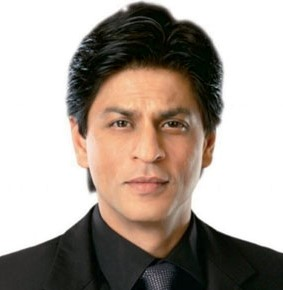

Resume

Shahrukh Khan
Email id:shahrukh.khan@gmail.com
Mobile No: 99999 88888/77777 88888
Address: Delhi, Gurugram, India
Career Objective
- To continuously challenge myself with diverse roles, pushing the boundaries of acting while inspiring audiences worldwide with compelling performances. Striving to contribute to the evolution of Indian cinema and leaving a lasting impact through storytelling and character portrayal.
Academic Qualification
- 10th S.S.C Delhi Public School, Delhi (1995)(72.34%)
- 12th H.S.C Delhi Public School, Delhi (1997)(68.40%)
- Bachelor in Mass Journalism, Delhi University, Delhi (2001)(62.18%)
Proffessional Skills
- Microsoft Office
- Writer & Acting
Working Experience
- Work in Fauji series in Television Industry 2002 to 2006
- More than 100 films done in Bollywood industry
Personal Details
- Name: Shahrukh Khan
- Birth Date: 01/10/1965
- Gender: Male
- Nationality: Indian
- Marital Status: Married
- Language: Hindi, English & Marathi
Achievments